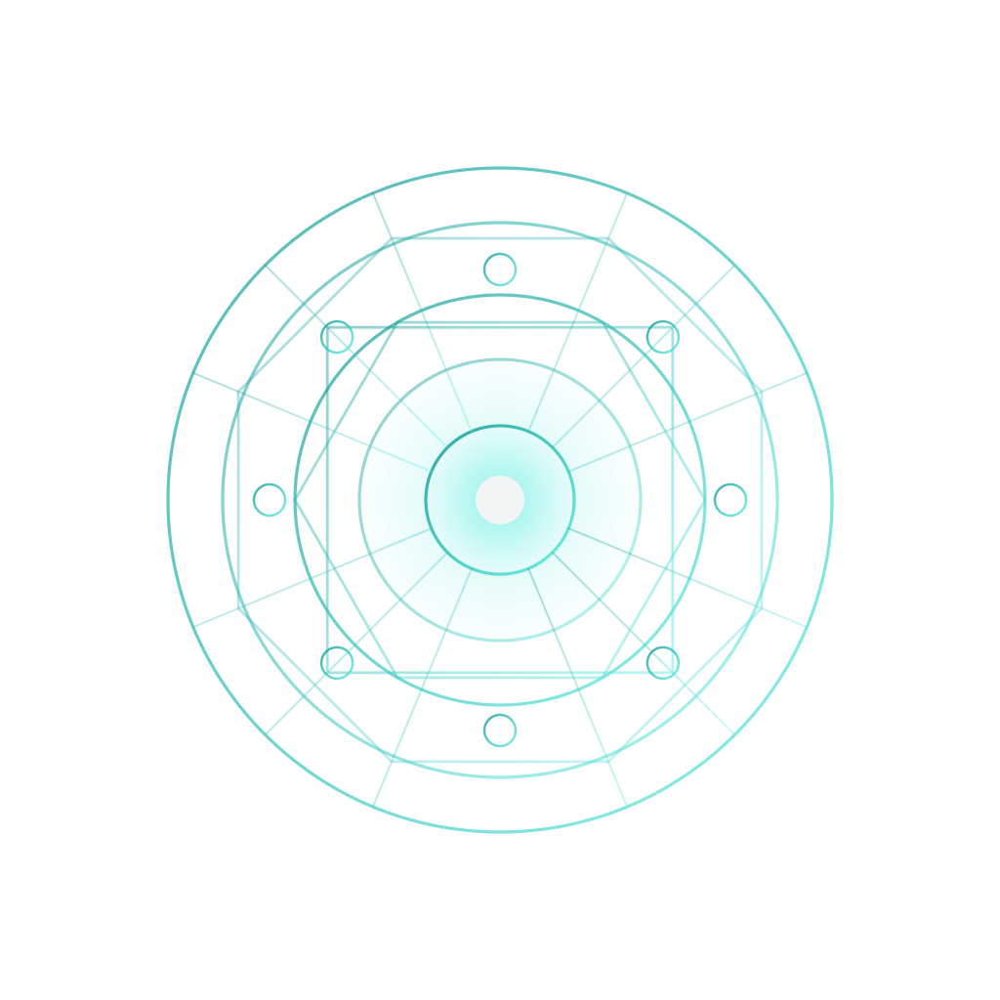
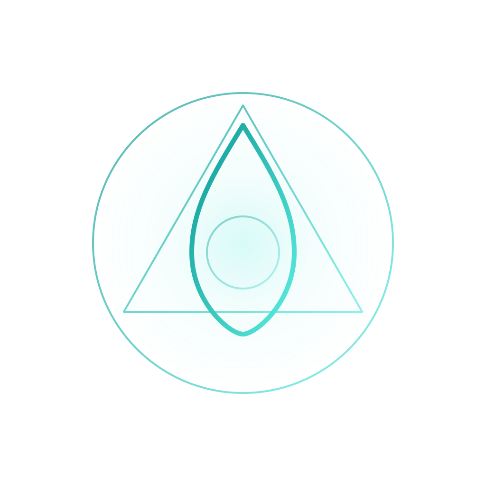
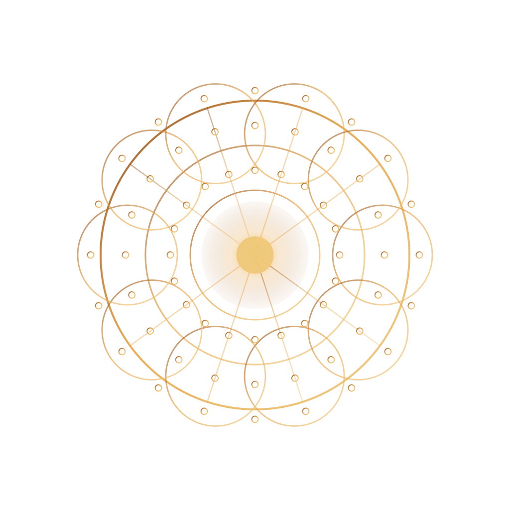
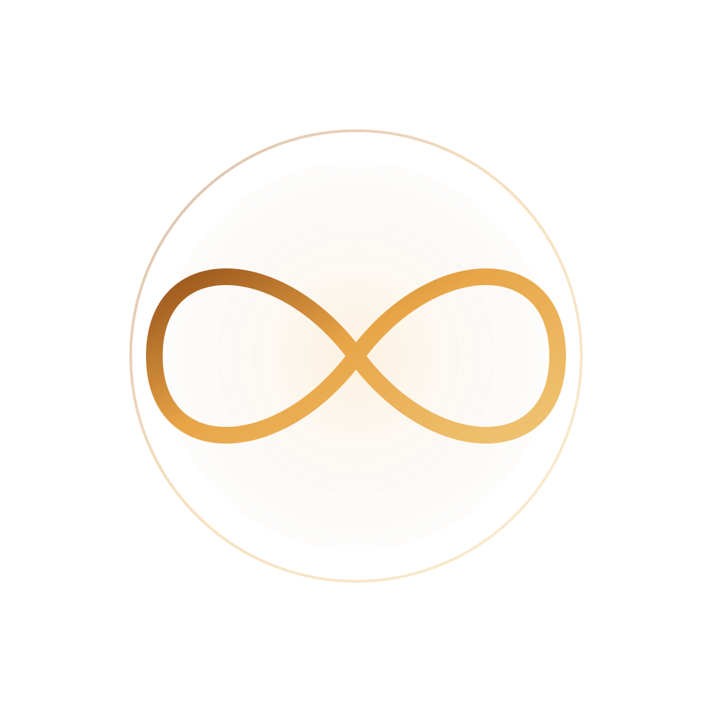

A practitioner-guided practice working with chronic patterns through bioresonance, scalar field modalities and a structured six-week progression. Considered work for clients who want technical depth, not promises.
We treat the body as an informational system rather than a biochemical machine. Sessions begin with reading — biofeedback first — and progress through frequency application, remote continuity, and structured reassessment over a defined working phase.
Every working phase begins with biofeedback. We do not impose frequencies; we observe what the body is already organising around.
Stability is earned, not scheduled. Tier advancement is gated by observable settling, not the calendar.
We frame outcomes as observed rather than guaranteed. Anecdotal evidence is presented as anecdotal.
Sample-based remote protocols (RPS, RTS, RDS, RDSP) extend the work between in-clinic sessions.
A Pathway is a roadmap. You are enrolled on one. Within most pathways, you progress through four Access Tiers — earned through stability and readiness, not the calendar.

For stable individuals who want preset frequency sessions only. No biofeedback. No tier progression. Book and attend as needed.

For one or two defined challenges. Structured guidance. Tier progression. Targeted frequency work.
For chronic or multi-system patterns. Sequenced, layered, longer-arc work. Higher governance and progression.

For intensive protocols designed by the manufacturer. Multiple sessions per week. High structure.

Full remote pathway for clients who cannot attend in person. Uses nail samples and structured remote sequencing.
A taxonomy for the territory the practice covers. Every working phase is mapped against the seven pillars at intake and reassessment.
Phoenix Sanctum™ operates a curated equipment stack. None of it is mysterious; the value is in how it is sequenced, calibrated and read.
Position papers, reading lists, and the occasional measured progression note from inside the practice. No marketing. No promotional cadence. Roughly four issues a year.
On the case for biofeedback as the gating step in any frequency working phase.
Where the literature stands, what we use it for, and what we do not claim.
A working definition for the term we use most often, with seven references.